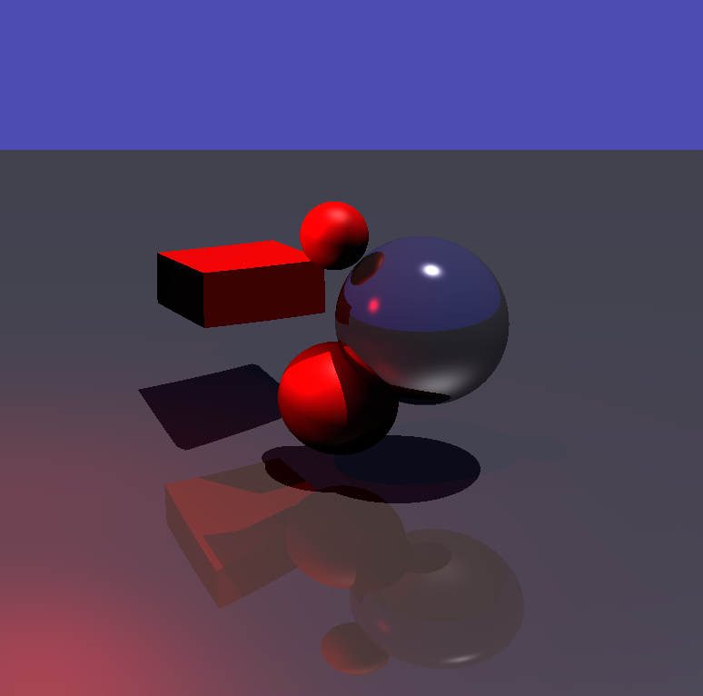

Javascript Raytracing Engine
As part of my COM S 336, I worked with a classmate to create a raytracing engine using Javascript.
The engine featured lighting, simple shapes, reflections, and camera controls.
The choice of using Javascript is a strange one considering javascript code is not particularily
fast, especially on the browser. The reason we chose Javascript was because the rest of the class
was taught in Javascript to teach us WebGL, and even though speed is of importance when it comes to
practical applications of raytracing, our intention was only to explore the mechanics which make
raytracing work. This meant we allowed ourselves to sacrifice speed for a faster development cycle.
My contribution to the project was in designing the lighting system, calculating ray collisions to
simulate rays bouncing as well as reflecting, and designing camera controls.
Source code can be found on the
project page